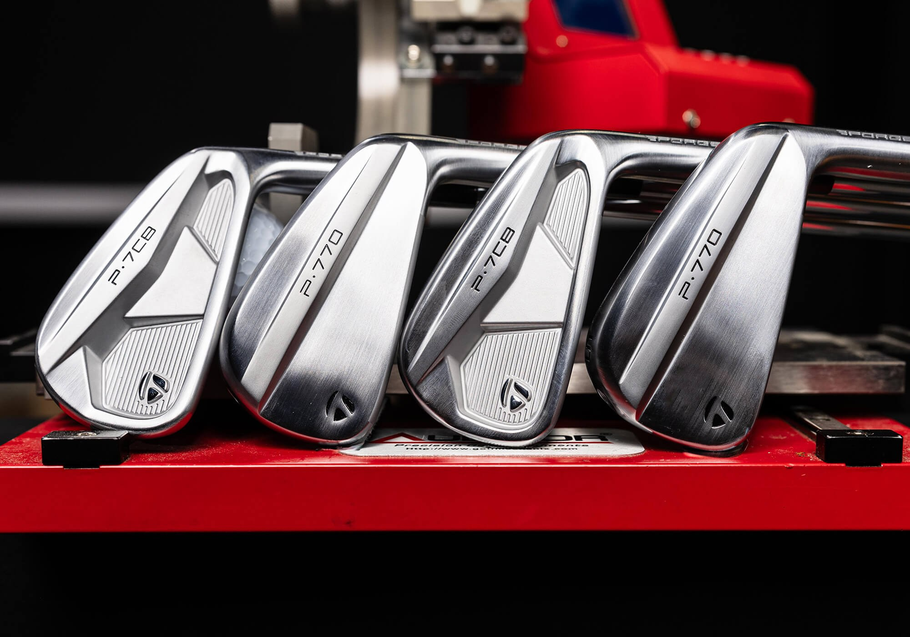

★★★★★
“He’s super knowledgeable and takes the time to explain every step of the process.”
Sydney Cascagnette
Google review
Purpose-built junior fittings with premium components and room to grow.
Junior golfers deserve the same attention to detail as the professionals. Young players can be custom-fit into premium TaylorMade equipment, including P7CB irons — a model played by Rory McIlroy — paired with specialized KBS Generation steel shafts.
With multiple shaft weights and flex options, each set is built around the player's strength, swing characteristics, and stage of development.

As junior golfers grow, shafts can be replaced to accommodate changes in height, strength, and swing speed, allowing suitable existing heads to be retained when appropriate rather than replacing the entire set.
A smarter, more personalized approach to junior equipment, combining professional-level fitting with long-term value.
From developing fundamentals to competitive golf, let's discuss equipment that supports their next step.
Request a Junior FittingSee what golfers have shared about their experience with Mike Pike Golf.
“He’s super knowledgeable and takes the time to explain every step of the process.”
Google review
“Amazing to work with, made everything very easy to understand and was very in depth when explaining!”
Google review
“I would 100% recommend him to anyone who is looking to take that next step in club selection.”
Google review